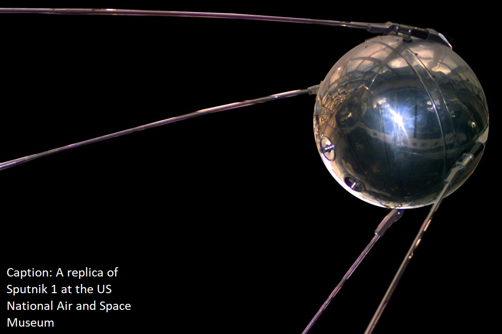

Sputnik 1

What was it?
Sputnik was the first artificial satellite to ever successfully launch and orbit the Earth, on October 4, 1957. It was around the same size as a beach ball, weighed 180 pounds, and orbited around the earth every 96 minutes at 18,000 miles per hour. Its main purpose was to be the first orbiting artificial satellite, but it also served other purposes such as the calculation of atmospheric density and the collection of radio signals that could give data about the ionosphere. This launch is generally seen as a catalyst to various political, military, technological, and scientific developments. However, the most evident and important effect of the launch was that it marked the beginning of a period of history that is now known as the space race between two main countries, the Soviet Union and the United States of America.
United States Reaction
As a direct result of the Soviet Union’s scientific breakthrough, a period of public fear known as the Sputnik crisis occurred in the states, triggering the creation of organizations such as NASA. Up to this point, the US was the leading dominant world power with inventions such as U2 spy planes. However, studies were done that showed that the Soviet Union has been training many more scientists compared to the United States, and this technological jump was considered a threat to the US national security. Of course, the United States tried as quickly as possible to create an artificial satellite of their own, and they accomplished this a mere three months later with the Explorer 1.
So, Who Won the Race?
The Space Race lasted for 18 years, so there must have been a winner, right? Well, this has been discussed between intellectuals since the end of the race. Of course, these 18 years involved many more technological breakthroughs, including Yuri Gagarin, the first human ever placed in orbit by the Soviet Union in 1961, followed by the United States in 1962. Perhaps the most famous breakthrough in this time was Neil Armstrong and the Apollo project reaching the moon. Some see this as the victory for the United States, however with improving relations between the two countries, the Apollo Soyuz joint mission marked the end of the space race for both countries. So who won the space race? It can be well argued that both won.